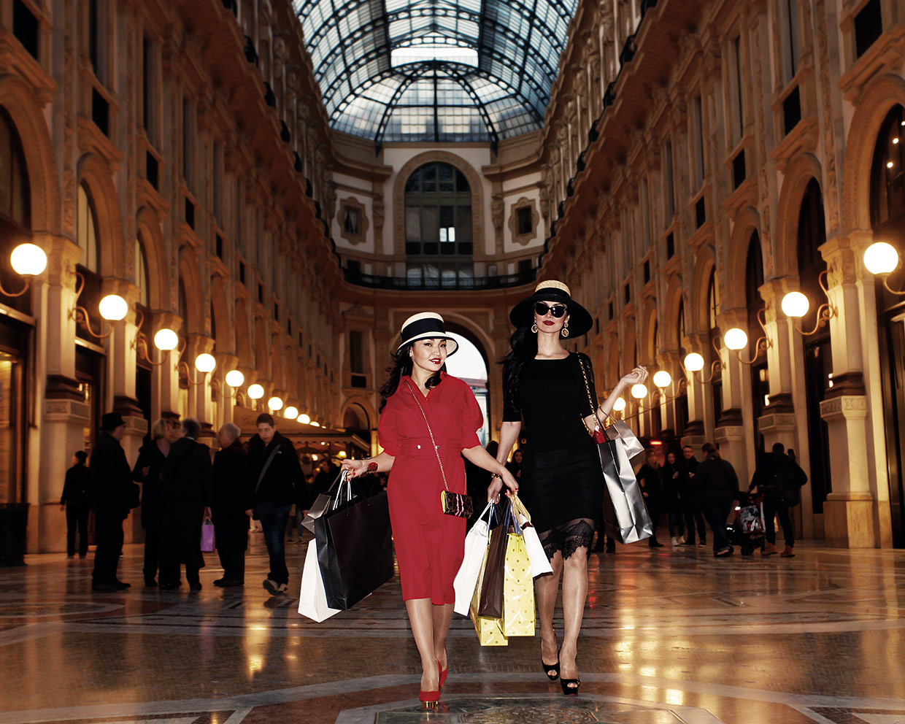

Italy is famous for its beautiful and elegant fashion.
Italian fashion is known for style, creativity, quality, and attention to detail.
Cities like Milan are important fashion centers where many designers and brands create new trends.
Italian clothing and accessories often combine classic designs with modern ideas, making Italian fashion popular around the world.
🇮🇹✨

Fendi 👜
Fendi is a famous Italian luxury fashion house founded in Rome in 1925.
It is well known for its high-quality leather goods, stylish handbags, accessories, and elegant fur items.
One of its most famous creations is the Baguette handbag, which became a global fashion icon.
Fendi's fashion shows in Milan feature classic Roman craftsmanship combined with creative modern designs.
Gucci is one of the oldest and most famous Italian fashion brands, founded in Florence in 1921.
It started as a small shop making luxury leather luggage and grew into an international high-fashion brand.
Gucci is known for its iconic double-G logo, red and green stripes, and bold, colourful designs.
Its fashion shows are famous for setting major global trends every season.
Prada was founded in Milan in 1913 by Mario Prada as a shop for leather goods and luxury handbags.
Today, Prada is recognized worldwide for its minimalist style, elegant clean lines, and sophisticated clothing.
The brand is famous for introducing stylish luxury nylon accessories alongside traditional fine leather designs.
Prada’s runway shows are highlights of Milan Fashion Week.
Versace was founded in 1978 by Gianni Versace in Milan and became famous for its bold and glamorous designs.
The brand is recognized by its unique Medusa head logo and vibrant gold patterns.
Versace clothing combines classic Italian artistic influences with modern pop culture, making it very popular with celebrities around the world.
Its fashion shows are energetic, colorful, and luxurious.
Giorgio Armani founded his brand in Milan in 1975 and revolutionized fashion with sleek, comfortable suits and minimalist designs.
Armani is famous for bringing effortless elegance and sophisticated tailoring to modern fashion and movie red carpets worldwide.